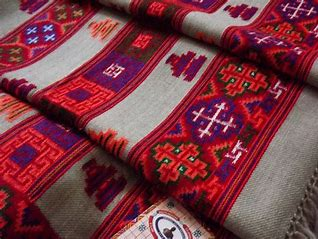
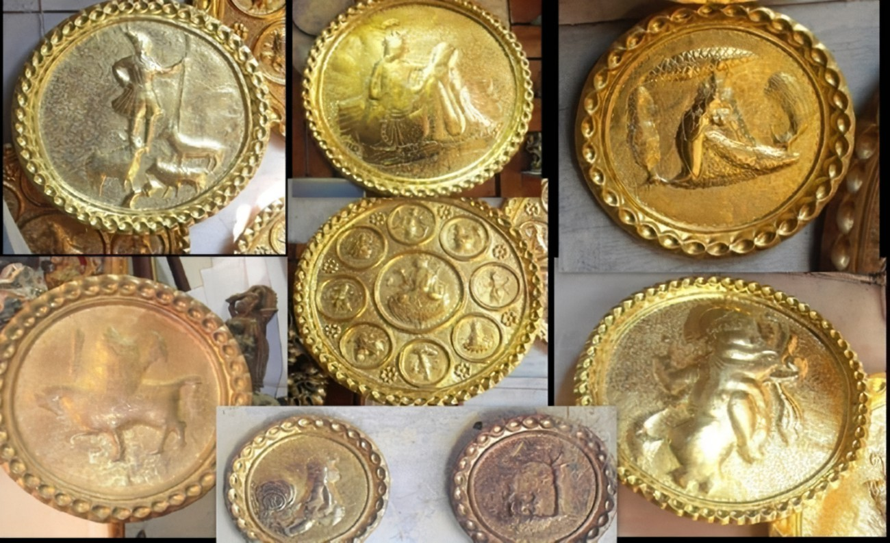
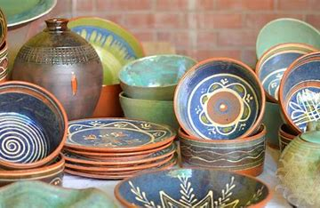

Jammu and Kashmir boasts a rich tradition of art and crafts, reflecting its unique cultural heritage and the influences of various communities.
Shawls:
Kullu shawls have gained popularity beyond the local market, with tourists often purchasing them as souvenirs. They are appreciated for their craftsmanship and unique designs, making them a valuable addition to any wardrobe.
Metal Craft:
Metal crafts in Himachal Pradesh are not just about utility; they carry cultural and spiritual meanings, often used in religious rituals and festivals.
They also play a role in the state's economy, with many artisans relying on their craft for livelihood.
Pottery:
Pottery plays a vital role in everyday life in Himachal Pradesh. It is not only functional but also an integral part of cultural rituals and festivities.
Many pieces are used in traditional ceremonies, highlighting their importance in local customs.


